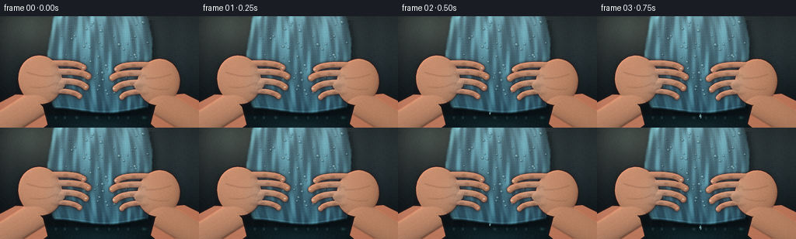
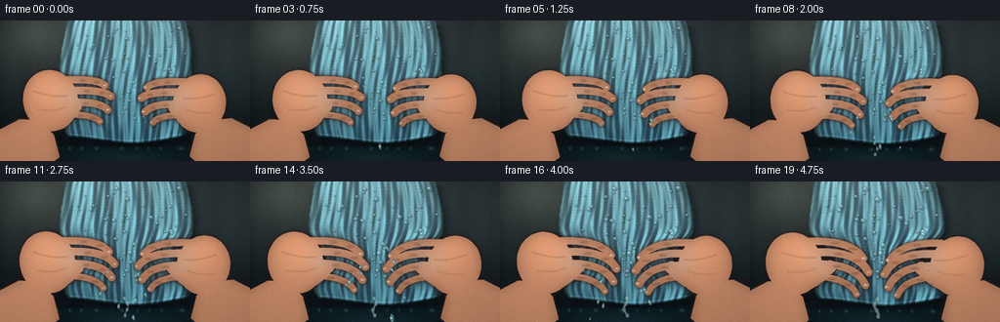
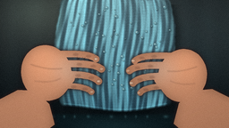
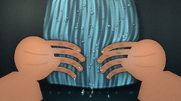
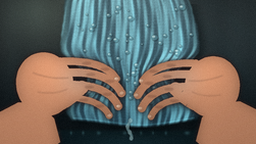
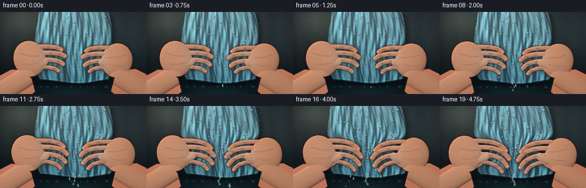
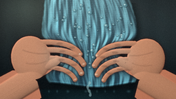
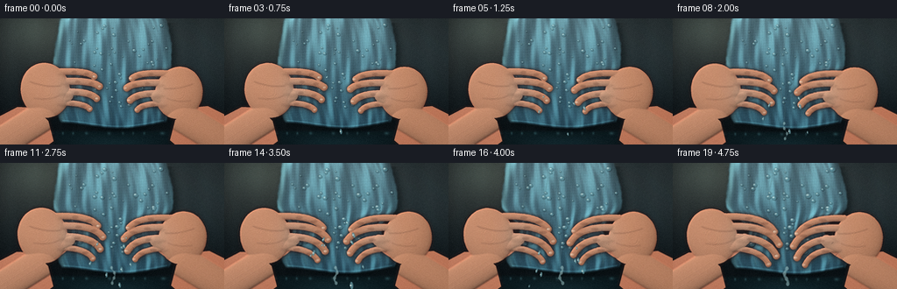
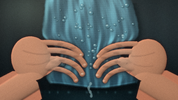

CODING AGENTS AS PIXEL WORLD MODELS
traex/DeepSeek-V4.1-Flash · phygen_015
点击播放 · 原生 RGB 像素
逐轮保存的候选
回放视频、检查图与代码变化。
每份候选均可单独播放。实际图片检查记录在下方工具轨迹中。
候选 01播放与检查图
点击播放 · 原生 RGB 像素

展开代码变化
--- 上一保存版本
+++ 本次保存版本
@@ -0,0 +1,666 @@
+from __future__ import annotations
+
+import math
+from pathlib import Path
+
+import numpy as np
+from PIL import Image, ImageDraw, ImageFilter
+
+import artifact_io
+
+
+WIDTH = 256
+HEIGHT = 144
+FRAMES = 20
+FPS = 4.0
+SS = 4
+W = WIDTH * SS
+H = HEIGHT * SS
+CASE_DIR = Path(__file__).resolve().parent
+
+
+def smoothstep(edge0: float, edge1: float, x):
+ t = np.clip((x - edge0) / (edge1 - edge0), 0.0, 1.0)
+ return t * t * (3.0 - 2.0 * t)
+
+
+def ease_pressure(s: float) -> float:
+ return 0.035 + 0.965 * (s ** 1.35)
+
+
+def lerp(a, b, t):
+ return a + (b - a) * t
+
+
+def cloth_geometry(y, pressure):
+ y = np.asarray(y, dtype=np.float32)
+ v = np.clip(y / 144.0, 0.0, 1.0)
+ center = (
+ 128.0
+ + 1.7 * np.sin(y * 0.055 + 0.4)
+ + 4.2 * pressure * np.sin((y - 34.0) / 49.0)
+ )
+ half = 59.5 + 12.0 * np.sin(np.pi * v) ** 0.75 - 8.0 * v
+ grip = np.exp(-((y - (76.0 + 1.5 * pressure)) / 17.5) ** 2)
+ half *= 1.0 - (0.345 * pressure + 0.025) * grip
+ half *= 1.0 + 0.055 * pressure * np.exp(-((y - 108.0) / 12.0) ** 2)
+ half *= 1.0 + 0.028 * pressure * np.exp(-((y - 49.0) / 12.0) ** 2)
+ return center, half
+
+
+def bezier(points, steps=26):
+ pts = np.asarray(points, dtype=np.float32)
+ if len(pts) == 3:
+ t = np.linspace(0.0, 1.0, steps, dtype=np.float32)[:, None]
+ return ((1 - t) ** 2) * pts[0] + 2 * (1 - t) * t * pts[1] + t**2 * pts[2]
+ t = np.linspace(0.0, 1.0, steps, dtype=np.float32)[:, None]
+ return (
+ (1 - t) ** 3 * pts[0]
+ + 3 * (1 - t) ** 2 * t * pts[1]
+ + 3 * (1 - t) * t**2 * pts[2]
+ + t**3 * pts[3]
+ )
+
+
+def spt(p):
+ return (float(p[0]) * SS, float(p[1]) * SS)
+
+
+def polygon(draw, points, fill=255):
+ draw.polygon([spt(p) for p in points], fill=fill)
+
+
+def ellipse(draw, cx, cy, rx, ry, fill=255, angle=0.0):
+ theta = np.linspace(0.0, 2.0 * np.pi, 52, endpoint=False)
+ ca, sa = math.cos(angle), math.sin(angle)
+ xs = cx + rx * np.cos(theta) * ca - ry * np.sin(theta) * sa
+ ys = cy + rx * np.cos(theta) * sa + ry * np.sin(theta) * ca
+ draw.polygon([(float(x) * SS, float(y) * SS) for x, y in zip(xs, ys)], fill=fill)
+
+
+def capsule(draw, points, width, fill=255):
+ curve = bezier(points)
+ scaled = [spt(p) for p in curve]
+ draw.line(scaled, fill=fill, width=max(1, int(round(width * SS))), joint="curve")
+ r = width * SS * 0.5
+ for p in (scaled[0], scaled[-1]):
+ draw.ellipse((p[0] - r, p[1] - r, p[0] + r, p[1] + r), fill=fill)
+
+
+def make_hand_mask(pressure):
+ mask = Image.new("L", (W, H), 0)
+ draw = ImageDraw.Draw(mask)
+ p = pressure
+
+ # Left forearm and palm.
+ polygon(
+ draw,
+ [
+ (-35, 150),
+ (-24, 132),
+ (-3, 113),
+ (20, 101),
+ (40, 102),
+ (55, 117),
+ (61, 140),
+ (47, 150),
+ ],
+ )
+ ellipse(draw, 52.0 - 6.0 * p, 82.0 + 1.5 * p, 28.0, 31.5, angle=-0.23)
+ capsule(draw, [(44, 106), (62, 108), (77 + 5 * p, 88 - 1.5 * p)], 13.0)
+
+ left_fingers = [
+ ([(61, 61), (83, 60), (100 + 6 * p, 60 + 3 * p), (107 + 9 * p, 66 + 12 * p)], 7.4),
+ ([(63, 72), (87, 71), (105 + 6 * p, 71 + 2 * p), (113 + 8 * p, 77 + 15 * p)], 8.0),
+ ([(62, 84), (86, 83), (103 + 6 * p, 84 + 2 * p), (110 + 8 * p, 91 + 14 * p)], 7.8),
+ ([(60, 96), (81, 96), (96 + 5 * p, 97 + 2 * p), (102 + 7 * p, 103 + 11 * p)], 6.6),
+ ]
+ for points, width in left_fingers:
+ capsule(draw, points, width)
+
+ # Right hand, deliberately a little lower for a natural two-handed grip.
+ polygon(
+ draw,
+ [
+ (292, 150),
+ (281, 130),
+ (259, 111),
+ (237, 100),
+ (216, 102),
+ (200, 116),
+ (194, 139),
+ (207, 150),
+ ],
+ )
+ ellipse(draw, 204.0 + 6.0 * p, 85.0 + 1.0 * p, 27.0, 30.0, angle=0.20)
+ capsule(draw, [(212, 106), (194, 109), (179 - 5 * p, 89 - 1.0 * p)], 13.0)
+
+ right_fingers = [
+ ([(194, 63), (174, 62), (158 - 6 * p, 62 + 3 * p), (151 - 9 * p, 68 + 12 * p)], 7.2),
+ ([(192, 74), (170, 73), (153 - 6 * p, 73 + 2 * p), (145 - 8 * p, 79 + 15 * p)], 7.9),
+ ([(193, 86), (171, 85), (156 - 6 * p, 86 + 2 * p), (149 - 8 * p, 93 + 14 * p)], 7.7),
+ ([(195, 97), (176, 97), (162 - 5 * p, 98 + 2 * p), (157 - 7 * p, 104 + 11 * p)], 6.5),
+ ]
+ for points, width in right_fingers:
+ capsule(draw, points, width)
+
+ return mask, left_fingers, right_fingers
+
+
+def make_hand_details(pressure, left_fingers, right_fingers):
+ layer = Image.new("RGBA", (W, H), (0, 0, 0, 0))
+ draw = ImageDraw.Draw(layer)
+ p = pressure
+
+ def joint_dot(x, y, rx=3.5, ry=2.2, angle=0.0, alpha=70):
+ ellipse(draw, x, y, rx, ry, fill=(83, 45, 38, alpha), angle=angle)
+
+ # Knuckle pads and finger creases.
+ for points, _ in left_fingers + right_fingers:
+ curve = bezier(points)
+ for fraction in (0.43, 0.72):
+ q = curve[int(fraction * (len(curve) - 1))]
+ joint_dot(q[0], q[1] + 0.8, 2.8 + 1.5 * p, 1.3, alpha=60)
+
+ # Palm creases, clipped to the hand silhouette when composited.
+ crease = [(34, 72), (52, 79), (69, 77)]
+ draw.line([spt(q) for q in bezier(crease)], fill=(101, 57, 47, 70), width=max(1, SS))
+ crease2 = [(39, 91), (56, 94), (68, 88)]
+ draw.line([spt(q) for q in bezier(crease2)], fill=(105, 59, 48, 55), width=max(1, SS))
+ crease3 = [(220, 75), (202, 82), (187, 80)]
+ draw.line([spt(q) for q in bezier(crease3)], fill=(96, 53, 44, 64), width=max(1, SS))
+ crease4 = [(218, 94), (203, 97), (190, 91)]
+ draw.line([spt(q) for q in bezier(crease4)], fill=(102, 56, 45, 50), width=max(1, SS))
+
+ return layer.filter(ImageFilter.GaussianBlur(0.55 * SS))
+
+
+def shade_hands(pressure, frame_seed):
+ mask, left_fingers, right_fingers = make_hand_mask(pressure)
+ mask_arr = np.asarray(mask, dtype=np.float32) / 255.0
+ interior = np.asarray(
+ mask.filter(ImageFilter.GaussianBlur(5.0 * SS)), dtype=np.float32
+ ) / 255.0
+ yy, xx = np.mgrid[0:H, 0:W].astype(np.float32)
+ xn = xx / W
+ yn = yy / H
+
+ light = (
+ 0.70
+ + 0.26 * interior
+ + 0.105 * (1.0 - yn)
+ + 0.045 * (1.0 - xn)
+ )
+ skin_base = np.empty((H, W, 3), dtype=np.float32)
+ skin_base[:] = (192.0, 133.0, 101.0)
+
+ # Broad warm bounce light on the backs of the hands.
+ g1 = np.exp(-(((xx / SS - 49) / 22.0) ** 2 + ((yy / SS - 72) / 25.0) ** 2))
+ g2 = np.exp(-(((xx / SS - 207) / 21.0) ** 2 + ((yy / SS - 75) / 24.0) ** 2))
+ warm = 30.0 * (g1 + 0.9 * g2)
+
+ color = skin_base * light[..., None]
+ color += warm[..., None] * np.array([1.0, 0.66, 0.42], dtype=np.float32)
+
+ # Slight cool reflection from the wet cloth at the gripping edges.
+ cool = np.exp(-(((yy / SS - 79) / 16.0) ** 2)) * np.exp(
+ -((np.abs(xx / SS - 128.0) - 52.0) / 18.0) ** 2
+ )
+ color += cool[..., None] * np.array([4.0, 18.0, 24.0], dtype=np.float32)
+
+ color = np.clip(color, 0, 255).astype(np.uint8)
+ hand_rgb = Image.fromarray(color)
+ hand_rgba = hand_rgb.convert("RGBA")
+ hand_rgba.putalpha(mask)
+
+ details = make_hand_details(pressure, left_fingers, right_fingers)
+ details_arr = np.asarray(details, dtype=np.float32)
+ details_arr[..., 3] *= mask_arr
+ details = Image.fromarray(np.clip(details_arr, 0, 255).astype(np.uint8), "RGBA")
+ hand_rgba = Image.alpha_composite(hand_rgba, details)
+
+ # Tiny wet highlights and compressed fingertip pads.
+ shine = Image.new("RGBA", (W, H), (0, 0, 0, 0))
+ sd = ImageDraw.Draw(shine)
+ p = pressure
+ tips = [
+ (108 + 9 * p, 67 + 12 * p),
+ (114 + 8 * p, 78 + 15 * p),
+ (111 + 8 * p, 92 + 14 * p),
+ (103 + 7 * p, 104 + 11 * p),
+ (150 - 9 * p, 69 + 12 * p),
+ (144 - 8 * p, 80 + 15 * p),
+ (148 - 8 * p, 94 + 14 * p),
+ (156 - 7 * p, 105 + 11 * p),
+ ]
+ for i, (x, y) in enumerate(tips):
+ r = 2.0 + 0.35 * p
+ ellipse(sd, x - 0.7, y - 0.9, r, r * 0.7, fill=(245, 226, 204, 85), angle=-0.2)
+ if i % 2 == 0:
+ ellipse(sd, x - 1.8, y - 1.4, 1.0, 0.7, fill=(255, 250, 232, 150))
+ shine = shine.filter(ImageFilter.GaussianBlur(0.35 * SS))
+
+ # Keep decorative highlights on the skin.
+ shine_arr = np.asarray(shine, dtype=np.float32)
+ shine_arr[..., 3] *= mask_arr
+ shine = Image.fromarray(np.clip(shine_arr, 0, 255).astype(np.uint8), "RGBA")
+ hand_rgba = Image.alpha_composite(hand_rgba, shine)
+
+ # Dark, soft silhouette keeps fingers legible against the cloth.
+ outline = mask.filter(ImageFilter.GaussianBlur(1.9 * SS))
+ outline_arr = np.asarray(outline, dtype=np.float32) / 255.0
+ outline_arr = np.clip(outline_arr * 1.9, 0, 1) * 0.68
+ outline_img = Image.new("RGBA", (W, H), (49, 28, 27, 0))
+ outline_img.putalpha(Image.fromarray((outline_arr * 255).astype(np.uint8)))
+ hand_rgba = Image.alpha_composite(outline_img, hand_rgba)
+ return hand_rgba, mask
+
+
+def make_background(pressure, frame_seed):
+ yy, xx = np.mgrid[0:H, 0:W].astype(np.float32)
+ xn = xx / (W - 1)
+ yn = yy / (H - 1)
+
+ top = np.array([48.0, 57.0, 59.0], dtype=np.float32)
+ bottom = np.array([13.0, 20.0, 24.0], dtype=np.float32)
+ mix = smoothstep(0.0, 1.0, yn)[..., None]
+ color = top * (1.0 - mix) + bottom * mix
+
+ glow = np.exp(-(((xn - 0.23) / 0.29) ** 2 + ((yn - 0.06) / 0.34) ** 2))
+ color += glow[..., None] * np.array([26.0, 25.0, 19.0], dtype=np.float32)
+
+ side_glow = np.exp(-(((xn - 0.90) / 0.18) ** 2 + ((yn - 0.34) / 0.46) ** 2))
+ color += side_glow[..., None] * np.array([8.0, 12.0, 13.0], dtype=np.float32)
+
+ # Very soft vertical bands suggest an out-of-focus tiled wall.
+ bands = 3.0 * np.sin(xx * 0.019 + 0.7) + 1.4 * np.sin(xx * 0.057 - 1.2)
+ color += bands[..., None] * np.array([0.8, 1.0, 1.0], dtype=np.float32)
+
+ # Shallow water along the bottom edge.
+ puddle = smoothstep(126.0, 131.0, yy / SS) * (
+ 1.0 - 0.15 * smoothstep(137.0, 143.0, yy / SS)
+ )
+ puddle_color = np.array([13.0, 28.0, 33.0], dtype=np.float32)
+ puddle_color = puddle_color[None, None, :] + (
+ 10.0 * (1.0 - yn)[..., None] * np.array([0.25, 0.65, 0.72], dtype=np.float32)
+ )
+ color = color * (1.0 - puddle[..., None]) + puddle_color * puddle[..., None]
+
+ # Cloth reflection, distorted into small horizontal glints.
+ reflection = np.exp(-((xx / SS - 128.0) / 55.0) ** 2)
+ reflection *= smoothstep(126.0, 132.0, yy / SS)
+ reflection *= 0.40 + 0.60 * smoothstep(131.0, 143.0, yy / SS)
+ color += reflection[..., None] * np.array([9.0, 19.0, 21.0], dtype=np.float32)
+ glint = (0.5 + 0.5 * np.sin(xx * 0.095 + np.sin(xx * 0.021) * 2.0)) ** 13
+ glint *= np.exp(-((yy / SS - 131.0) / 1.7) ** 2)
+ color += glint[..., None] * np.array([30.0, 48.0, 49.0], dtype=np.float32)
+
+ vignette = 1.0 - 0.35 * (
+ ((xn - 0.5) / 0.72) ** 2 + ((yn - 0.47) / 0.82) ** 2
+ )
+ color *= np.clip(vignette, 0.58, 1.0)[..., None]
+ return Image.fromarray(np.clip(color, 0, 255).astype(np.uint8), "RGB")
+
+
+def render_cloth(pressure, frame_index, rng):
+ yy, xx = np.mgrid[0:H, 0:W].astype(np.float32)
+ xd = xx / SS
+ yd = yy / SS
+ center, half = cloth_geometry(yd, pressure)
+ u = (xd - center) / np.maximum(half, 1.0)
+ v = np.clip((yd + 14.0) / 140.0, 0.0, 1.0)
+
+ edge_ripple = (
+ 0.006 * np.sin(yd * 0.24 + 0.7)
+ + 0.0035 * np.sin(yd * 0.73 - 0.4 + pressure * 2.0)
+ )
+ bottom = 121.0 + 3.2 * np.cos(2.25 * u) + 1.2 * np.sin(3.4 * u + 0.7)
+ mask = (
+ (np.abs(u) <= 1.0 + edge_ripple)
+ & (yd > -18.0)
+ & (yd < bottom)
+ ).astype(np.float32)
+
+ phase = 0.45 * pressure
+ relief = 0.69 * np.sin(
+ 2.0 * np.pi * (1.58 * u + 0.11 * np.sin(5.2 * v + phase))
+ )
+ relief += 0.25 * np.sin(
+ 2.0 * np.pi * (4.7 * u - 1.05 * v + 0.15 * phase)
+ )
+ relief += 0.115 * np.sin(2.0 * np.pi * (9.7 * u + 2.25 * v))
+ grip = np.exp(-((yd - 78.0) / 27.0) ** 2)
+ relief += 0.36 * pressure * grip * np.sin(
+ 2.0 * np.pi * (2.8 * u + 0.23 * np.sin(4.0 * v))
+ )
+ relief -= 0.24 * pressure * np.exp(-((yd - 102.0) / 18.0) ** 2) * np.cos(
+ 2.0 * np.pi * 2.1 * u
+ )
+
+ gy, gx = np.gradient(relief)
+ nx = -gx * 15.0
+ ny = -gy * 15.0
+ nz = np.ones_like(nx)
+ norm = np.sqrt(nx * nx + ny * ny + nz * nz)
+ nx, ny, nz = nx / norm, ny / norm, nz / norm
+ light_vec = np.array([-0.43, -0.58, 0.69], dtype=np.float32)
+ light_vec /= np.linalg.norm(light_vec)
+ diffuse = nx * light_vec[0] + ny * light_vec[1] + nz * light_vec[2]
+ diffuse = np.clip(0.5 + 0.75 * diffuse, 0.0, 1.35)
+
+ top_color = np.array([88.0, 119.0, 128.0], dtype=np.float32)
+ bottom_color = np.array([38.0, 70.0, 86.0], dtype=np.float32)
+ base = top_color[None, None, :] * (1.0 - v[..., None]) + bottom_color[None, None, :] * v[..., None]
+ weave = (
+ 0.975
+ + 0.020 * np.sin(xd * 2.35 + yd * 0.20)
+ + 0.016 * np.sin(yd * 2.0 + xd * 0.11)
+ )
+ fine_noise = rng.normal(0.0, 0.027, (H // 4, W // 4)).astype(np.float32)
+ fine_noise = np.asarray(
+ Image.fromarray(np.clip((fine_noise + 0.5) * 255, 0, 255).astype(np.uint8))
+ .resize((W, H), Image.Resampling.BICUBIC),
+ dtype=np.float32,
+ ) / 255.0 - 0.5
+ weave += fine_noise
+
+ color = base * (0.55 + 0.57 * diffuse[..., None])
+ color *= weave[..., None]
+
+ spec_band = np.clip((diffuse - 0.82) / 0.35, 0.0, 1.0) ** 1.8
+ color += spec_band[..., None] * np.array([61.0, 97.0, 96.0], dtype=np.float32)
+
+ wet_ridge = np.clip((relief + 0.15) / 1.15, 0.0, 1.0) ** 6
+ color += wet_ridge[..., None] * np.array([18.0, 34.0, 37.0], dtype=np.float32)
+
+ edge = smoothstep(0.80, 1.0, np.abs(u))
+ color *= (1.0 - 0.31 * edge)[..., None]
+ rim = np.exp(-((u + 0.955) / 0.045) ** 2) * np.exp(-((v - 0.55) / 0.60) ** 2)
+ color += rim[..., None] * np.array([35.0, 49.0, 47.0], dtype=np.float32)
+
+ # The curled hem is a little darker and catches a narrow wet highlight.
+ hem = np.exp(-((yd - bottom) / 2.1) ** 2) * (np.abs(u) < 1.05)
+ color *= (1.0 - 0.22 * hem)[..., None]
+ hem_glint = np.exp(-((yd - (bottom - 2.0)) / 0.75) ** 2) * (np.abs(u) < 0.95)
+ color += hem_glint[..., None] * np.array([20.0, 36.0, 38.0], dtype=np.float32)
+
+ color = np.clip(color, 0, 255).astype(np.uint8)
+ rgb = Image.fromarray(color, "RGB").convert("RGBA")
+ alpha = Image.fromarray((mask * 255).astype(np.uint8), "L").filter(
+ ImageFilter.GaussianBlur(0.65 * SS)
+ )
+ rgb.putalpha(alpha)
+ return rgb, mask, center, half
+
+
+def draw_water_beads(scene, pressure, frame_index, rng, center, half):
+ layer = Image.new("RGBA", (W, H), (0, 0, 0, 0))
+ draw = ImageDraw.Draw(layer)
+ for i in range(68):
+ u0 = rng.uniform(-0.91, 0.91)
+ v0 = rng.uniform(0.04, 0.87)
+ size0 = rng.uniform(0.75, 2.6) * (0.82 + 0.45 * pressure)
+ drift = rng.uniform(0.0, 1.0)
+ y = 3.0 + v0 * 115.0 + 2.0 * pressure * drift * (0.3 + v0)
+ y += 0.35 * np.sin(frame_index * 0.9 + i * 1.7)
+ u = u0 + 0.012 * np.sin(frame_index * 0.48 + i * 0.63)
+ c, h = cloth_geometry(y, pressure)
+ x = c + u * h
+ if abs(u) > 0.96 or y > 120.0:
+ continue
+ r = size0
+ ellipse(draw, x + 0.45, y + 0.65, r * 1.1, r * 0.85, fill=(6, 17, 22, 80))
+ ellipse(draw, x, y, r, r * 0.82, fill=(88, 137, 148, 155))
+ ellipse(draw, x - r * 0.27, y - r * 0.28, r * 0.45, r * 0.30, fill=(211, 239, 237, 180))
+ layer = layer.filter(ImageFilter.GaussianBlur(0.25 * SS))
+ scene.alpha_composite(layer)
+
+
+def draw_rivulets(scene, pressure, frame_index, center, half):
+ layer = Image.new("RGBA", (W, H), (0, 0, 0, 0))
+ draw = ImageDraw.Draw(layer)
+ count = 5
+ for i in range(count):
+ u0 = -0.62 + 0.31 * i + 0.05 * math.sin(i * 2.1)
+ pts = []
+ for k in range(18):
+ y = 15.0 + k * 5.9
+ c, h = cloth_geometry(y, pressure)
+ wiggle = 0.028 * math.sin(y * 0.15 + i * 1.7 + frame_index * 0.20)
+ x = c + (u0 + wiggle) * h
+ pts.append(spt((x, y)))
+ alpha = int(36 + 42 * pressure)
+ draw.line(pts, fill=(130, 177, 182, alpha), width=max(1, int(0.8 * SS)), joint="curve")
+ if i % 2 == 0:
+ shifted = [(x + 0.35 * SS, y) for x, y in pts]
+ draw.line(shifted, fill=(221, 241, 237, 68), width=max(1, int(0.35 * SS)), joint="curve")
+ layer = layer.filter(ImageFilter.GaussianBlur(0.35 * SS))
+ scene.alpha_composite(layer)
+
+
+def make_droplets(pressure):
+ drops = []
+ rng = np.random.default_rng(9182)
+
+ # Bottom-hem drips become a continuous stream as pressure increases.
+ for i in range(20):
+ birth = 0.38 + i * (0.245 - 0.095 * i / 19.0)
+ side = -1.0 if i % 2 == 0 else 1.0
+ drops.append(
+ {
+ "birth": birth,
+ "x": 128.0 + side * rng.uniform(3.0, 15.0),
+ "y": 119.0 + rng.uniform(-1.0, 2.0),
+ "vx": side * rng.uniform(4.0, 17.0),
+ "vy": rng.uniform(35.0, 57.0),
+ "r": rng.uniform(1.0, 2.1),
+ }
+ )
+
+ # Water forced from around the gripping fingers.
+ for i in range(34):
+ birth = 0.72 + i * (0.145 - 0.055 * i / 33.0)
+ from_left = i % 2 == 0
+ x = (116.0 if from_left else 140.0) + rng.uniform(-3.0, 3.0)
+ y = 78.0 + rng.uniform(-13.0, 16.0)
+ drops.append(
+ {
+ "birth": birth,
+ "x": x,
+ "y": y,
+ "vx": (-1 if from_left else 1) * rng.uniform(12.0, 42.0),
+ "vy": rng.uniform(18.0, 48.0),
+ "r": rng.uniform(0.55, 1.45),
+ }
+ )
+ return drops
+
+
+def draw_water_drop(layer, x, y, r, vx, vy, alpha=185):
+ draw = ImageDraw.Draw(layer)
+ angle = math.atan2(vy, vx)
+ rx = r * 1.8
+ ry = r * 0.78
+ ellipse(draw, x, y, rx, ry, fill=(102, 151, 160, alpha), angle=angle)
+ hx = x - math.sin(angle) * r * 0.45
+ hy = y - math.cos(angle) * r * 0.45
+ ellipse(
+ draw,
+ hx,
+ hy,
+ max(0.35, r * 0.40),
+ max(0.28, r * 0.28),
+ fill=(230, 249, 244, min(245, alpha + 40)),
+ )
+
+
+def draw_water_and_ripples(scene, pressure, frame_index, time_s, droplets, center, half):
+ layer = Image.new("RGBA", (W, H), (0, 0, 0, 0))
+ draw = ImageDraw.Draw(layer)
+
+ # Falling drops and spray.
+ for drop in droplets:
+ age = time_s - drop["birth"]
+ if age < 0.0 or age > 0.72:
+ continue
+ x = drop["x"] + drop["vx"] * age
+ y = drop["y"] + drop["vy"] * age + 0.5 * 185.0 * age * age
+ if y > 140.0:
+ continue
+ alpha = int(205 * min(1.0, (0.72 - age) * 8.0))
+ draw_water_drop(
+ layer,
+ x,
+ y,
+ drop["r"] * (1.0 + 0.45 * pressure),
+ drop["vx"],
+ drop["vy"] + 185.0 * age,
+ alpha,
+ )
+
+ # A coherent, thin stream pours from the lower pinch once the grip is firm.
+ if pressure > 0.22:
+ stream_alpha = int(np.clip((pressure - 0.20) * 310.0, 0, 145))
+ stream_width = 0.55 + 2.7 * pressure
+ x0 = 128.0 + 1.0 * math.sin(frame_index * 0.8)
+ points = []
+ for k in range(14):
+ yy = 119.0 + k * 1.45
+ xx = x0 + 1.8 * math.sin(k * 0.52 + frame_index * 0.45) + 0.045 * (yy - 119.0)
+ points.append(spt((xx, yy)))
+ draw.line(points, fill=(117, 163, 169, stream_alpha), width=max(1, int(stream_width * SS)), joint="curve")
+ highlight = [(x - 0.5 * SS, y) for x, y in points]
+ draw.line(
+ highlight,
+ fill=(224, 243, 238, min(220, stream_alpha + 55)),
+ width=max(1, int(0.32 * SS)),
+ joint="curve",
+ )
+ for k in range(0, 13, 4):
+ q = (x0 + 1.8 * math.sin(k * 0.52 + frame_index * 0.45) + 0.045 * (k * 1.45), 119.0 + k * 1.45)
+ ellipse(draw, q[0], q[1], 1.1 + 0.8 * pressure, 1.5 + 0.8 * pressure, fill=(157, 195, 197, 145))
+
+ layer = layer.filter(ImageFilter.GaussianBlur(0.20 * SS))
+ scene.alpha_composite(layer)
+
+ # Expanding puddle rings at increasing frequency.
+ ripple_layer = Image.new("RGBA", (W, H), (0, 0, 0, 0))
+ rd = ImageDraw.Draw(ripple_layer)
+ event_times = [0.78, 1.15, 1.53, 1.88, 2.17, 2.43, 2.68, 2.91, 3.13, 3.34, 3.53, 3.72, 3.91, 4.08, 4.25, 4.42, 4.59, 4.76]
+ for i, event in enumerate(event_times):
+ age = time_s - event
+ if age < 0.0 or age > 0.92:
+ continue
+ rx = 5.0 + 31.0 * age
+ ry = 1.1 + 5.4 * age
+ cx = 128.0 + 8.0 * math.sin(i * 2.4) + 0.7 * math.sin(i)
+ alpha = int(100 * (1.0 - age / 0.92) ** 1.5)
+ rd.ellipse(
+ (
+ (cx - rx) * SS,
+ (132.2 - ry) * SS,
+ (cx + rx) * SS,
+ (132.2 + ry) * SS,
+ ),
+ outline=(177, 211, 209, alpha),
+ width=max(1, int(0.45 * SS)),
+ )
+ ripple_layer = ripple_layer.filter(ImageFilter.GaussianBlur(0.30 * SS))
+ scene.alpha_composite(ripple_layer)
+
+
+def add_hand_shadow(scene, hand_mask, pressure):
+ shadow = hand_mask.filter(ImageFilter.GaussianBlur(4.2 * SS))
+ shadow = ImageChops_offset(shadow, int(1.6 * SS), int(3.4 * SS))
+ arr = np.asarray(shadow, dtype=np.float32) / 255.0
+ arr = np.clip(arr * 1.35, 0, 1) * (0.22 + 0.08 * pressure)
+ tint = Image.new("RGBA", (W, H), (5, 15, 18, 0))
+ tint.putalpha(Image.fromarray((arr * 255).astype(np.uint8), "L"))
+ scene.alpha_composite(tint)
+
+
+def ImageChops_offset(image, dx, dy):
+ shifted = Image.new(image.mode, image.size, 0)
+ shifted.paste(image, (dx, dy))
+ return shifted
+
+
+def add_atmosphere_and_grain(image, frame_index, pressure):
+ arr = np.asarray(image.convert("RGB"), dtype=np.float32)
+ yy, xx = np.mgrid[0:H, 0:W].astype(np.float32)
+ xn = xx / W
+ yn = yy / H
+
+ # A narrow cool highlight at the upper left, plus restrained lens falloff.
+ flare = np.exp(-(((xn - 0.14) / 0.10) ** 2 + ((yn - 0.08) / 0.16) ** 2))
+ arr += flare[..., None] * np.array([12.0, 16.0, 14.0], dtype=np.float32)
+ vignette = 1.0 - 0.12 * (
+ ((xn - 0.5) / 0.75) ** 2 + ((yn - 0.48) / 0.88) ** 2
+ )
+ arr *= np.clip(vignette, 0.74, 1.0)[..., None]
+
+ rng = np.random.default_rng(441 + frame_index)
+ grain = rng.normal(0.0, 1.55, (HEIGHT, WIDTH, 1)).astype(np.float32)
+ small = Image.fromarray(np.clip(arr, 0, 255).astype(np.uint8), "RGB").resize(
+ (WIDTH, HEIGHT), Image.Resampling.LANCZOS
+ )
+ arr_small = np.asarray(small, dtype=np.float32)
+ arr_small += grain
+ return Image.fromarray(np.clip(arr_small, 0, 255).astype(np.uint8), "RGB")
+
+
+def render_frame(frame_index):
+ s = frame_index / (FRAMES - 1)
+ time_s = frame_index / FPS
+ pressure = ease_pressure(s)
+ rng = np.random.default_rng(731 + frame_index)
+
+ bg = make_background(pressure, frame_index).convert("RGBA")
+
+ cloth, cloth_mask, center, half = render_cloth(pressure, frame_index, rng)
+ cloth_shadow = Image.fromarray((cloth_mask * 255).astype(np.uint8), "L").filter(
+ ImageFilter.GaussianBlur(4.8 * SS)
+ )
+ cloth_shadow = ImageChops_offset(cloth_shadow, int(3.2 * SS), int(5.2 * SS))
+ sh_arr = np.asarray(cloth_shadow, dtype=np.float32) / 255.0
+ sh_arr = np.clip(sh_arr * 1.35, 0, 1) * 0.48
+ shadow_tint = Image.new("RGBA", (W, H), (3, 9, 11, 0))
+ shadow_tint.putalpha(Image.fromarray((sh_arr * 255).astype(np.uint8), "L"))
+ bg.alpha_composite(shadow_tint)
+ bg.alpha_composite(cloth)
+
+ bead_rng = np.random.default_rng(8021)
+ draw_water_beads(bg, pressure, frame_index, bead_rng, center, half)
+ draw_rivulets(bg, pressure, frame_index, center, half)
+
+ hand_rgba, hand_mask = shade_hands(pressure, frame_index)
+ add_hand_shadow(bg, hand_mask, pressure)
+ bg.alpha_composite(hand_rgba)
+
+ droplets = make_droplets(pressure)
+ draw_water_and_ripples(bg, pressure, frame_index, time_s, droplets, center, half)
+
+ final = add_atmosphere_and_grain(bg, frame_index, pressure)
+
+ # A restrained push-in makes the final seconds feel tighter.
+ zoom = 1.0 + 0.018 * smoothstep(0.0, 1.0, s)
+ crop_w = int(round(WIDTH / zoom))
+ crop_h = int(round(HEIGHT / zoom))
+ left = (WIDTH - crop_w) // 2
+ top = (HEIGHT - crop_h) // 2
+ final = final.crop((left, top, left + crop_w, top + crop_h)).resize(
+ (WIDTH, HEIGHT), Image.Resampling.LANCZOS
+ )
+ return np.asarray(final, dtype=np.uint8)
+
+
+def main():
+ frames = np.stack([render_frame(i) for i in range(FRAMES)], axis=0)
+ assert frames.shape == (FRAMES, HEIGHT, WIDTH, 3)
+ assert frames.dtype == np.uint8
+ artifact_io.save(frames, CASE_DIR)
+ print(f"saved {len(frames)} frames to {CASE_DIR}")
+
+
+if __name__ == "__main__":
+ main()
候选 02播放与检查图
点击播放 · 原生 RGB 像素

展开代码变化
--- 上一保存版本
+++ 本次保存版本
@@ -175,38 +175,114 @@
return layer.filter(ImageFilter.GaussianBlur(0.55 * SS))
+def add_capsule_height(height, xx, yy, p0, p1, radius, depth_scale=1.0):
+ pad = radius * SS + 3
+ x0 = int(max(0, min(p0[0], p1[0]) * SS - pad))
+ x1 = int(min(W, max(p0[0], p1[0]) * SS + pad))
+ y0 = int(max(0, min(p0[1], p1[1]) * SS - pad))
+ y1 = int(min(H, max(p0[1], p1[1]) * SS + pad))
+ if x0 >= x1 or y0 >= y1:
+ return
+ ax, ay = p0[0] * SS, p0[1] * SS
+ bx, by = p1[0] * SS, p1[1] * SS
+ sx, sy = xx[y0:y1, x0:x1], yy[y0:y1, x0:x1]
+ vx, vy = bx - ax, by - ay
+ denom = max(vx * vx + vy * vy, 1e-5)
+ t = np.clip(((sx - ax) * vx + (sy - ay) * vy) / denom, 0.0, 1.0)
+ dx = sx - (ax + t * vx)
+ dy = sy - (ay + t * vy)
+ rr = radius * SS
+ dome = np.sqrt(np.maximum(0.0, rr * rr - dx * dx - dy * dy)) * depth_scale
+ height[y0:y1, x0:x1] = np.maximum(height[y0:y1, x0:x1], dome)
+
+
+def add_ellipse_height(height, xx, yy, cx, cy, rx, ry, angle, depth):
+ pad = max(rx, ry) * SS + 3
+ x0 = int(max(0, (cx - max(rx, ry)) * SS - pad))
+ x1 = int(min(W, (cx + max(rx, ry)) * SS + pad))
+ y0 = int(max(0, (cy - max(rx, ry)) * SS - pad))
+ y1 = int(min(H, (cy + max(rx, ry)) * SS + pad))
+ if x0 >= x1 or y0 >= y1:
+ return
+ sx, sy = xx[y0:y1, x0:x1], yy[y0:y1, x0:x1]
+ ca, sa = math.cos(-angle), math.sin(-angle)
+ dx = (sx - cx * SS) * ca - (sy - cy * SS) * sa
+ dy = (sx - cx * SS) * sa + (sy - cy * SS) * ca
+ q = (dx / (rx * SS)) ** 2 + (dy / (ry * SS)) ** 2
+ dome = np.sqrt(np.maximum(0.0, 1.0 - q)) * depth * SS
+ height[y0:y1, x0:x1] = np.maximum(height[y0:y1, x0:x1], dome)
+
+
def shade_hands(pressure, frame_seed):
mask, left_fingers, right_fingers = make_hand_mask(pressure)
mask_arr = np.asarray(mask, dtype=np.float32) / 255.0
- interior = np.asarray(
- mask.filter(ImageFilter.GaussianBlur(5.0 * SS)), dtype=np.float32
- ) / 255.0
yy, xx = np.mgrid[0:H, 0:W].astype(np.float32)
xn = xx / W
yn = yy / H
- light = (
- 0.70
- + 0.26 * interior
- + 0.105 * (1.0 - yn)
- + 0.045 * (1.0 - xn)
- )
+ # A true rounded height field makes fingers read as volumes rather than
+ # flat silhouettes. Forearms stay shallower than palms and knuckles.
+ height = np.zeros((H, W), dtype=np.float32)
+ add_capsule_height(height, xx, yy, (-18, 154), (47, 113), 17.0, 0.60)
+ add_capsule_height(height, xx, yy, (276, 154), (208, 113), 17.0, 0.60)
+ add_ellipse_height(height, xx, yy, 52 - 6 * pressure, 82 + 1.5 * pressure, 28.0, 31.5, -0.23, 10.5)
+ add_ellipse_height(height, xx, yy, 204 + 6 * pressure, 85 + pressure, 27.0, 30.0, 0.20, 10.0)
+ for points, width in left_fingers + right_fingers:
+ curve = bezier(points)
+ for k in range(0, len(curve) - 1, 3):
+ taper = 1.0 - 0.09 * k / max(1, len(curve) - 1)
+ add_capsule_height(
+ height,
+ xx,
+ yy,
+ curve[k],
+ curve[min(k + 3, len(curve) - 1)],
+ width * 0.57 * taper,
+ 0.92,
+ )
+ add_capsule_height(height, xx, yy, (45, 105), (78 + 5 * pressure, 88), 6.7, 0.95)
+ add_capsule_height(height, xx, yy, (211, 105), (178 - 5 * pressure, 89), 6.7, 0.95)
+ height = np.asarray(
+ Image.fromarray(np.clip(height, 0, 255).astype(np.uint8), "L").filter(
+ ImageFilter.GaussianBlur(0.72 * SS)
+ ),
+ dtype=np.float32,
+ )
+ gy, gx = np.gradient(height)
+ nx = -gx * 0.36
+ ny = -gy * 0.36
+ nz = np.ones_like(nx)
+ norm = np.sqrt(nx * nx + ny * ny + nz * nz)
+ nx, ny, nz = nx / norm, ny / norm, nz / norm
+ lx, ly, lz = -0.47, -0.64, 0.61
+ diffuse = np.clip(nx * lx + ny * ly + nz * lz, 0.0, 1.0)
+ height_n = np.clip(height / (12.0 * SS), 0.0, 1.0)
+
+ light = 0.50 + 0.62 * diffuse + 0.12 * height_n + 0.05 * (1.0 - yn)
skin_base = np.empty((H, W, 3), dtype=np.float32)
- skin_base[:] = (192.0, 133.0, 101.0)
-
- # Broad warm bounce light on the backs of the hands.
- g1 = np.exp(-(((xx / SS - 49) / 22.0) ** 2 + ((yy / SS - 72) / 25.0) ** 2))
- g2 = np.exp(-(((xx / SS - 207) / 21.0) ** 2 + ((yy / SS - 75) / 24.0) ** 2))
- warm = 30.0 * (g1 + 0.9 * g2)
-
+ skin_base[:] = (194.0, 136.0, 104.0)
color = skin_base * light[..., None]
- color += warm[..., None] * np.array([1.0, 0.66, 0.42], dtype=np.float32)
-
- # Slight cool reflection from the wet cloth at the gripping edges.
- cool = np.exp(-(((yy / SS - 79) / 16.0) ** 2)) * np.exp(
- -((np.abs(xx / SS - 128.0) - 52.0) / 18.0) ** 2
- )
- color += cool[..., None] * np.array([4.0, 18.0, 24.0], dtype=np.float32)
+
+ # Subsurface warmth at the thin edges, cool fill from the left, and a
+ # restrained bounce from the wet blue cloth along the palms.
+ edge = np.clip(1.0 - height_n * 3.0, 0.0, 1.0) * mask_arr
+ color += edge[..., None] * np.array([24.0, 2.0, 0.0], dtype=np.float32)
+ color += (1.0 - xn)[..., None] * np.array([6.0, 7.0, 8.0], dtype=np.float32)
+ cool = np.exp(-(((yy / SS - 84.0) / 21.0) ** 2)) * np.exp(
+ -((np.abs(xx / SS - 128.0) - 47.0) / 19.0) ** 2
+ )
+ color += cool[..., None] * np.array([3.0, 16.0, 21.0], dtype=np.float32)
+
+ # Fine skin grain, scaled so it remains visible after downsampling.
+ skin_rng = np.random.default_rng(1618 + frame_seed)
+ pore = skin_rng.normal(0.0, 2.0, (H // 3, W // 3)).astype(np.float32)
+ pore = np.asarray(
+ Image.fromarray(np.clip(pore + 128, 0, 255).astype(np.uint8), "L").resize(
+ (W, H), Image.Resampling.BICUBIC
+ ),
+ dtype=np.float32,
+ ) - 128.0
+ color += pore[..., None] * np.array([0.9, 0.72, 0.58], dtype=np.float32)
color = np.clip(color, 0, 255).astype(np.uint8)
hand_rgb = Image.fromarray(color)
@@ -322,19 +398,28 @@
).astype(np.float32)
phase = 0.45 * pressure
- relief = 0.69 * np.sin(
- 2.0 * np.pi * (1.58 * u + 0.11 * np.sin(5.2 * v + phase))
- )
- relief += 0.25 * np.sin(
- 2.0 * np.pi * (4.7 * u - 1.05 * v + 0.15 * phase)
- )
- relief += 0.115 * np.sin(2.0 * np.pi * (9.7 * u + 2.25 * v))
+ fold_warp = (
+ 0.14 * np.sin(4.7 * v + 1.4)
+ + 0.075 * np.sin(9.2 * v - 0.6 + 1.9 * u)
+ )
+ relief = 0.56 * np.sin(
+ 2.0 * np.pi * (1.43 * u + 0.14 * np.sin(4.2 * v + phase) + fold_warp)
+ )
+ relief += 0.31 * np.sin(
+ 2.0 * np.pi * (3.7 * u - 0.86 * v + 0.19 * phase + 0.09 * np.sin(7.0 * v))
+ )
+ relief += 0.17 * np.sin(2.0 * np.pi * (6.1 * u + 1.57 * v - 0.3))
+ relief += 0.08 * np.sin(2.0 * np.pi * (11.7 * u - 2.9 * v))
grip = np.exp(-((yd - 78.0) / 27.0) ** 2)
- relief += 0.36 * pressure * grip * np.sin(
- 2.0 * np.pi * (2.8 * u + 0.23 * np.sin(4.0 * v))
- )
- relief -= 0.24 * pressure * np.exp(-((yd - 102.0) / 18.0) ** 2) * np.cos(
- 2.0 * np.pi * 2.1 * u
+ relief += 0.44 * pressure * grip * np.sin(
+ 2.0 * np.pi * (2.2 * u + 0.31 * np.sin(4.0 * v) + 0.07)
+ )
+ relief -= 0.29 * pressure * np.exp(-((yd - 102.0) / 18.0) ** 2) * np.cos(
+ 2.0 * np.pi * (1.75 * u + 0.08 * np.sin(v * 8.0))
+ )
+ # A broad off-center pull keeps the squeeze from looking mechanically mirrored.
+ relief += 0.19 * pressure * np.exp(-((yd - 63.0) / 31.0) ** 2) * np.exp(
+ -((u + 0.22) / 0.58) ** 2
)
gy, gx = np.gradient(relief)
候选 03播放与检查图
点击播放 · 原生 RGB 像素


展开代码变化
--- 上一保存版本
+++ 本次保存版本
@@ -274,7 +274,7 @@
color += cool[..., None] * np.array([3.0, 16.0, 21.0], dtype=np.float32)
# Fine skin grain, scaled so it remains visible after downsampling.
- skin_rng = np.random.default_rng(1618 + frame_seed)
+ skin_rng = np.random.default_rng(1618)
pore = skin_rng.normal(0.0, 2.0, (H // 3, W // 3)).astype(np.float32)
pore = np.asarray(
Image.fromarray(np.clip(pore + 128, 0, 255).astype(np.uint8), "L").resize(
@@ -398,18 +398,19 @@
).astype(np.float32)
phase = 0.45 * pressure
- fold_warp = (
- 0.14 * np.sin(4.7 * v + 1.4)
- + 0.075 * np.sin(9.2 * v - 0.6 + 1.9 * u)
- )
- relief = 0.56 * np.sin(
- 2.0 * np.pi * (1.43 * u + 0.14 * np.sin(4.2 * v + phase) + fold_warp)
+ # Low-frequency, curved folds. Smooth warps avoid the regular corduroy
+ # appearance of a simple sine field while retaining strong wet highlights.
+ bend = 0.28 * np.sin(3.4 * v + 0.8) + 0.16 * np.sin(6.3 * v - 1.1)
+ relief = 0.55 * np.sin(
+ 2.0 * np.pi * (1.18 * u + bend + 0.045 * np.sin(2.5 * u - v))
)
relief += 0.31 * np.sin(
- 2.0 * np.pi * (3.7 * u - 0.86 * v + 0.19 * phase + 0.09 * np.sin(7.0 * v))
- )
- relief += 0.17 * np.sin(2.0 * np.pi * (6.1 * u + 1.57 * v - 0.3))
- relief += 0.08 * np.sin(2.0 * np.pi * (11.7 * u - 2.9 * v))
+ 2.0 * np.pi * (2.48 * u - 0.64 * v + 0.12 * np.sin(5.0 * v + 0.3) + 0.10 * phase)
+ )
+ relief += 0.15 * np.sin(
+ 2.0 * np.pi * (4.1 * u + 1.18 * v - 0.45 + 0.08 * np.sin(6.5 * v))
+ )
+ relief += 0.08 * np.sin(2.0 * np.pi * (7.4 * u - 2.1 * v + 0.5))
grip = np.exp(-((yd - 78.0) / 27.0) ** 2)
relief += 0.44 * pressure * grip * np.sin(
2.0 * np.pi * (2.2 * u + 0.31 * np.sin(4.0 * v) + 0.07)
@@ -447,13 +448,13 @@
.resize((W, H), Image.Resampling.BICUBIC),
dtype=np.float32,
) / 255.0 - 0.5
- weave += fine_noise
+ weave += fine_noise * 0.42
color = base * (0.55 + 0.57 * diffuse[..., None])
color *= weave[..., None]
- spec_band = np.clip((diffuse - 0.82) / 0.35, 0.0, 1.0) ** 1.8
- color += spec_band[..., None] * np.array([61.0, 97.0, 96.0], dtype=np.float32)
+ spec_band = np.clip((diffuse - 0.88) / 0.30, 0.0, 1.0) ** 2.2
+ color += spec_band[..., None] * np.array([48.0, 83.0, 84.0], dtype=np.float32)
wet_ridge = np.clip((relief + 0.15) / 1.15, 0.0, 1.0) ** 6
color += wet_ridge[..., None] * np.array([18.0, 34.0, 37.0], dtype=np.float32)
@@ -664,6 +665,34 @@
scene.alpha_composite(tint)
+def add_contact_occlusion(scene, hand_mask, pressure, left_fingers, right_fingers):
+ layer = Image.new("RGBA", (W, H), (0, 0, 0, 0))
+ draw = ImageDraw.Draw(layer)
+ for points, width in left_fingers + right_fingers:
+ curve = bezier(points)
+ # A narrow shadow along the lower edge separates each finger from the
+ # one below and gives the grip a layered, three-dimensional structure.
+ lower = [(p[0] + 0.45, p[1] + width * 0.42) for p in curve[2:-2]]
+ draw.line(
+ [spt(p) for p in lower],
+ fill=(36, 22, 23, 70),
+ width=max(1, int(1.0 * SS)),
+ joint="curve",
+ )
+ lower2 = [(p[0] + 0.65, p[1] + width * 0.72) for p in curve[4:-4]]
+ draw.line(
+ [spt(p) for p in lower2],
+ fill=(18, 15, 17, 60),
+ width=max(1, int(1.4 * SS)),
+ joint="curve",
+ )
+ layer = layer.filter(ImageFilter.GaussianBlur(1.15 * SS))
+ arr = np.asarray(layer, dtype=np.float32)
+ arr[..., 3] *= np.asarray(hand_mask, dtype=np.float32) / 255.0
+ layer = Image.fromarray(np.clip(arr, 0, 255).astype(np.uint8), "RGBA")
+ scene.alpha_composite(layer)
+
+
def ImageChops_offset(image, dx, dy):
shifted = Image.new(image.mode, image.size, 0)
shifted.paste(image, (dx, dy))
@@ -684,7 +713,7 @@
)
arr *= np.clip(vignette, 0.74, 1.0)[..., None]
- rng = np.random.default_rng(441 + frame_index)
+ rng = np.random.default_rng(441)
grain = rng.normal(0.0, 1.55, (HEIGHT, WIDTH, 1)).astype(np.float32)
small = Image.fromarray(np.clip(arr, 0, 255).astype(np.uint8), "RGB").resize(
(WIDTH, HEIGHT), Image.Resampling.LANCZOS
@@ -721,6 +750,8 @@
hand_rgba, hand_mask = shade_hands(pressure, frame_index)
add_hand_shadow(bg, hand_mask, pressure)
bg.alpha_composite(hand_rgba)
+ _, left_fingers, right_fingers = make_hand_mask(pressure)
+ add_contact_occlusion(bg, hand_mask, pressure, left_fingers, right_fingers)
droplets = make_droplets(pressure)
draw_water_and_ripples(bg, pressure, frame_index, time_s, droplets, center, half)
可观测工具轨迹
实际执行的命令与返回图片。
命令 1exit 0
/bin/bash -c 'cat prompt.txt'
命令 2exit 0
/bin/bash -c 'cat GENERATION_RULES.md'
命令 3exit 0
/bin/bash -c 'cat task_spec.json'
命令 4exit 0
/bin/bash -c "find . -maxdepth 3 -type f -not -path './.git/*' -printf '%p\\n' | sort | head -200"
命令 5exit 0
/bin/bash -c "sed -n '1,240p' artifact_io.py"
命令 6exit 1
/bin/bash -c 'python generate.py'
命令 7exit 0
/bin/bash -c 'python generate.py'
命令 8exit 0
/bin/bash -c "python -c 'import scipy; print(scipy.__version__)'"
命令 9exit 0
/bin/bash -c 'mkdir -p candidates/candidate_01 && cp -r frames inspection.png pixels.npz index.html candidates/candidate_01/'
命令 10exit 0
/bin/bash -c 'python generate.py'
命令 11exit 0
/bin/bash -c "nl -ba generate.py | sed -n '150,330p'"
命令 12exit 0
/bin/bash -c "nl -ba generate.py | sed -n '400,500p'"
命令 13exit 0
/bin/bash -c 'python generate.py'
命令 14exit 1
/bin/bash -c "python - <<'PY'
from pathlib import Path
import numpy as np
from PIL import Image
frames = sorted(Path('frames').glob('*.png'))
assert len(frames) == 20, len(frames)
a = np.stack([np.asarray(Image.open(p).convert('RGB')) for p in frames])
assert a.shape == (20,144,256,3), a.shape
assert a.dtype == np.uint8
with np.load('pixels.npz') as z:
p = z['pixels']
assert p.shape == (144,256,20), p.shape
assert np.array_equal(p, (a[...,0].astype(np.uint32)<<16)|(a[...,1].astype(np.uint32)<<8)|a[...,2].transpose(1,2,0))
print('frames:', a.shape, 'range:', (int(a.min()), int(a.max())))
print('temporal MAE consecutive:', float(np.abs(a[1:].astype(np.int16)-a[:-1].astype(np.int16)).mean()))
print('artifact bytes:', Path('index.html').stat().st_size, Path('pixels.npz').stat().st_size)
PY"命令 15exit 0
/bin/bash -c "python - <<'PY'
from pathlib import Path
import numpy as np
from PIL import Image
frames = sorted(Path('frames').glob('*.png'))
assert len(frames) == 20, len(frames)
a = np.stack([np.asarray(Image.open(p).convert('RGB')) for p in frames])
assert a.shape == (20,144,256,3), a.shape
assert a.dtype == np.uint8
with np.load('pixels.npz') as z:
p = z['pixels']
assert p.shape == (144,256,20), p.shape
expected = ((a[...,0].astype(np.uint32)<<16)|(a[...,1].astype(np.uint32)<<8)|a[...,2]).transpose(1,2,0)
assert np.array_equal(p, expected)
print('frames:', a.shape, 'range:', (int(a.min()), int(a.max())))
print('temporal MAE consecutive:', float(np.abs(a[1:].astype(np.int16)-a[:-1].astype(np.int16)).mean()))
print('artifact bytes:', Path('index.html').stat().st_size, Path('pixels.npz').stat().st_size)
PY"命令 16exit 0
/bin/bash -c 'mkdir -p candidates/candidate_02 && cp -r frames inspection.png pixels.npz index.html candidates/candidate_02/ && python -m py_compile generate.py && git status --short'
视觉工具实际返回图片 1

视觉工具实际返回图片 2

视觉工具实际返回图片 3

视觉工具实际返回图片 4

视觉工具实际返回图片 5

视觉工具实际返回图片 6

视觉工具实际返回图片 7

视觉工具实际返回图片 8

视觉工具实际返回图片 9

保存候选 3 份；完成命令 16 次；可验证图片返回 9 张。原始 API 响应与完整日志保留在本地。